User Management Guide
The User Management module is used to manage user accounts, assign roles, control account status, reset credentials, and maintain secure access to the Finance Management System.
User Management Overview
Use the User menu to review registered accounts and manage their access.
User List Overview
The User List shows existing accounts along with user information, assigned roles, and available actions.
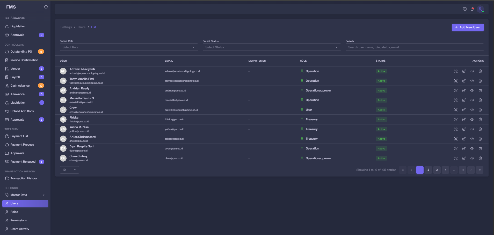
Apply the principle of least privilege: give users only the permissions required for their work.
User List and Filter
Use searching and filters to locate accounts quickly before viewing or changing them.
How to filter users
- Open the
Usermenu. - Use the filter action to open available filter fields.
- Select the required criteria, such as role or account status.
- Apply the filter and review the matching user records.
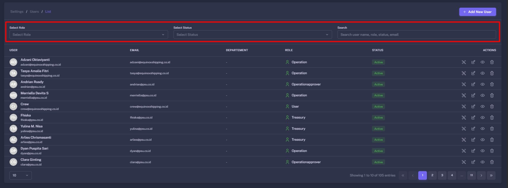
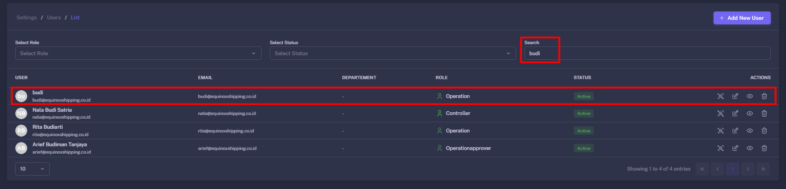
Create User
Create a new user account when an authorized employee or administrator requires system access.
How to create a user
- Open the
Usermenu and select the create-user action. - Enter the user identity and contact information.
- Select the appropriate role and configure access as required.
- Review the information and save the new account.
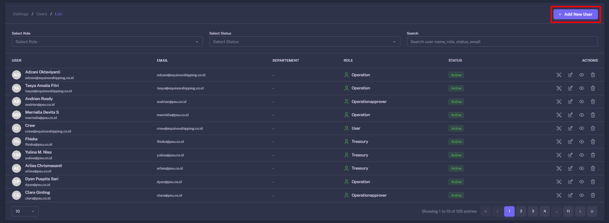
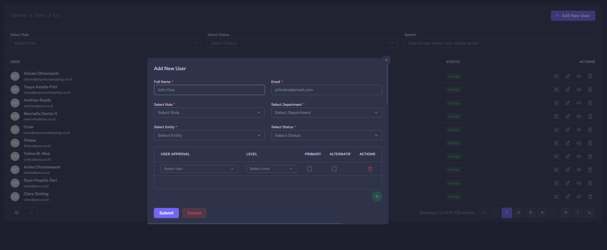
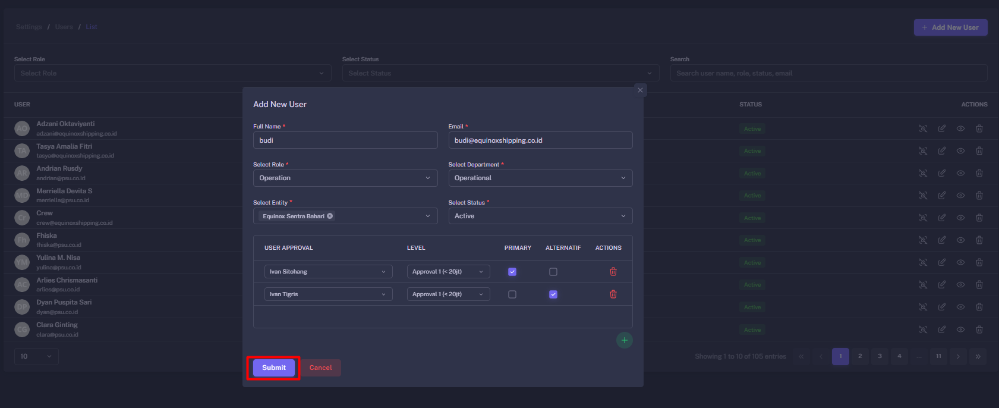
Do not reuse usernames or share accounts. Individual accounts preserve accountability in audit records.
Edit User
Update a user’s profile, role, access scope, or account settings when business responsibilities change.
How to edit a user
- Find the user from the User List.
- Open the available action menu and select
Edit. - Change the required profile, role, or access information.
- Save the changes after reviewing the account configuration.
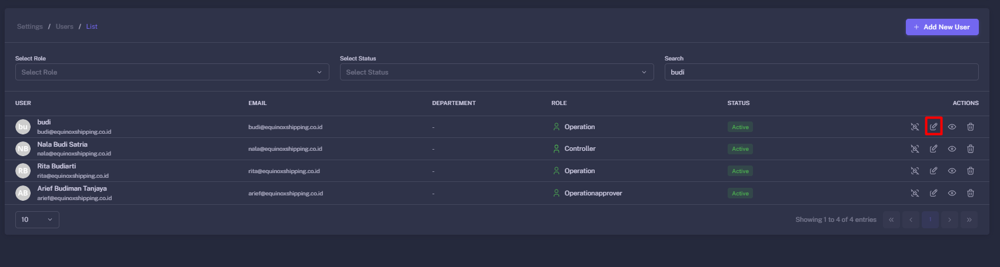
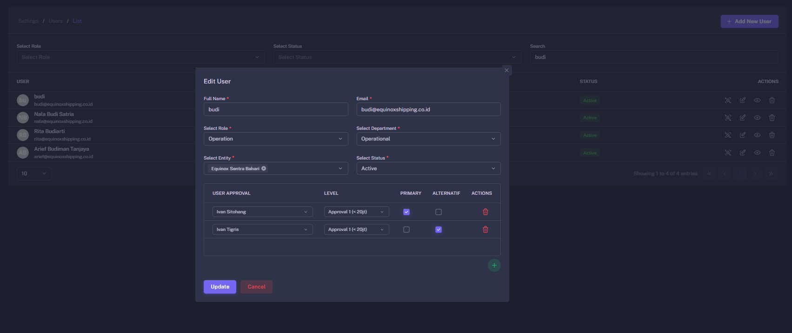
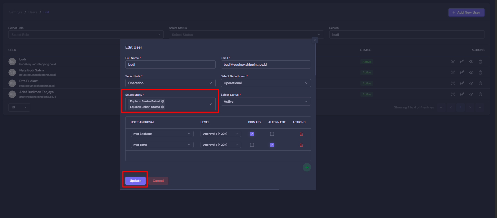
Reset Password
Reset credentials when a user cannot access their account or a reset is required for security reasons.
How to reset a password
- Find the target account in the
Usermenu. - Open the available actions and choose the password reset option.
- Enter or confirm the temporary password or reset process.
- Save the change and provide credentials through an approved secure channel.
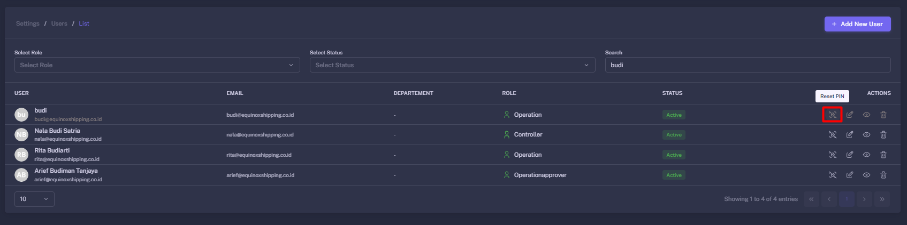
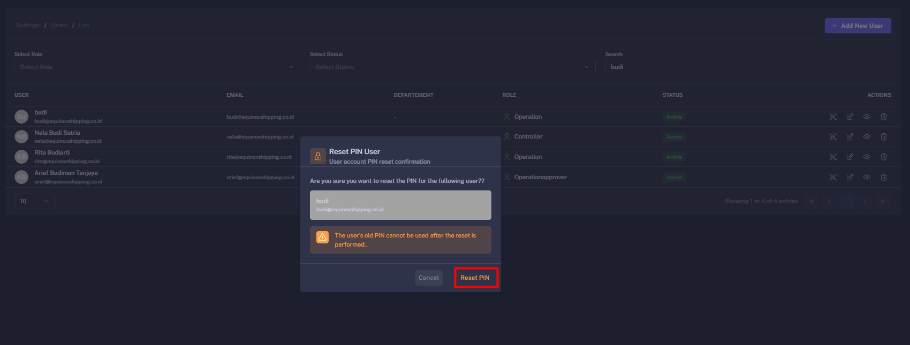
Never send permanent passwords through public chat channels. Use a temporary password, secure reset link, or approved internal process.
User Status Reference
These common account states control whether users may access the system.
| Status | Description | Administrator Action |
|---|---|---|
| Active | The user can log in with access defined by assigned roles. | Review access periodically. |
| Inactive | The account is retained but cannot access the system. | Use when access is no longer required while preserving history. |
| Locked | The account is temporarily blocked after a security event or failed logins. | Verify identity before unlocking or resetting credentials. |
| Pending | The account exists but is not fully configured or activated. | Complete role and access review before activation. |
User Management Security Guidelines
Use these practices to protect financial data and workflow access.
Proper user administration improves accountability and keeps approval and payment actions traceable to responsible users.